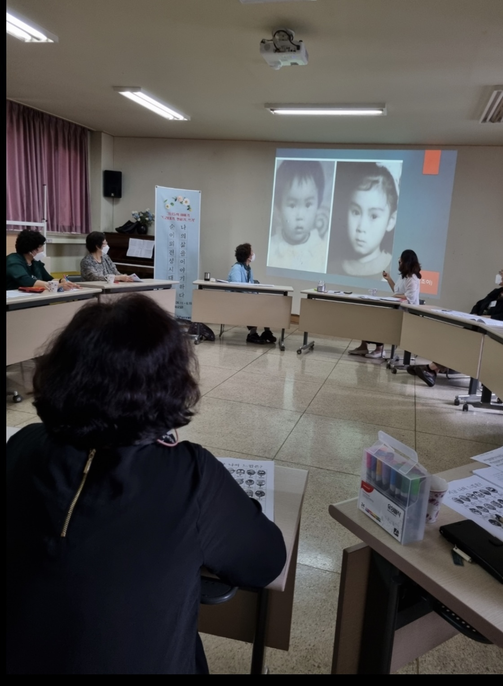
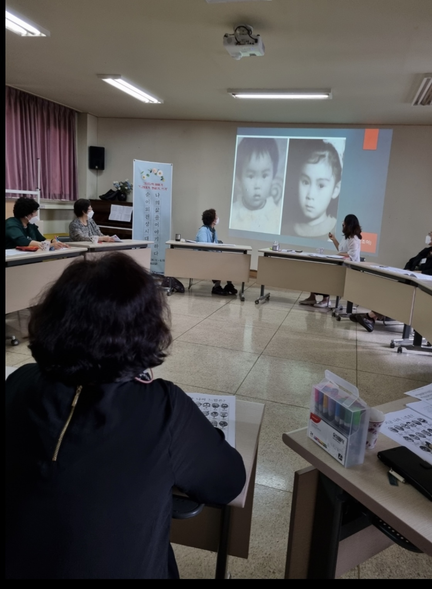

문인혜 원장님


 



마음이야기 심리상담센터 원장
문인혜 (IN-HYE MOON)
Personal History
현) 마음이야기 심리상담센터 대표
카톨릭대학교 상담심리대학원 상담심리 전공
미국 Claremont school of Theology (D.Min)
Pratical thology of Conflict, Healing, and
Transformation in Korean Contexts
갈등과 화해, 회복과 치유
자격
한국상담심리학회 2급 회원
한국상담학회 부부가족상담학회 정회원
한국상담심리학회 상담심리사 2급
보건복지부 임상심리사 1급
한국여성가족부 청소년상담사 2급
교육부 중등학교 2급 정교사
미국 Star's Edge International
Avater Master License
상담 경력 : 15년
전) 성장상담연구소 상담실장
서울 배화여자고등학교 강사
청주 청소년 상담복지센터 외래상담사
청소년 인터넷 중독 및 정서행동
집단 및 개인상담
서울 은평협동조합 소속 교육강사
허그맘허그인 평택 심리상담센터 상담사 8년
청주 헬로스마일 심리상담센터 수석상담사 6년
전문분야
청소년, 성인, 커플 및 부부, 가족, 집단
방송
KBS 1TV <동행> 2020년도 방송 출현


Interview
Q1. 문인혜 선생님은 어떤 상담자인가요?
"마음을 안아주는 상담자"
“안 울고 싶은데 이상하게 눈물이 나요."
(40대 여성 내담자)
도움이 필요해서 상담실 문을 두드렸지만, 막상 상담실에 들어오면 대부분 내담자분들이 긴장하신 표정으로 앉아 계실 때가 많습니다.
낯선 분위기.
낯선 장소, 낯선 사람 앞에서 자신을 드러내는 것은 큰 용기가 필요한 일이 아닐 수 없죠.
어떻게든 잘 설명하시려고 빼곡히 사연이 적힌 종이를 떨리는 목소리로 읽으시기도 하고, 어떻게 어디서부터 이야기를 꺼내야 할지 모르겠다며 난감한 표정으로 말씀하시기도 합니다.
저는 이 자리에 오시기까지 얼마나 많은 고민과 생각을 거듭하셨을지 그 마음을 잘 알 수 있기에~~
저의 표정과 눈빛.
함께 어우러지는 분위기 안에서 따뜻하게 마음으로 안아드리고 싶은 저의 바램이 내담자분들의 마음에 가서 닿기를 바라는 마음으로 상담을 합니다.
그리고 시간이 조금씩 흘러가면서 긴장했던 표정이 풀어지고 묶여있던 고통의 감정들이 눈물로. 흐느낌으로. 마음속 꺼내기 힘들었던 이야기들과 함께 끄집어 내어지기 시작합니다.
그리고 곧 당황스러운 표정으로 '어? 내가 왜 이러지~ . 제가 여기서 이렇게 울지는 몰랐어요.' 말씀하시곤 합니다.
심리 상담은 이렇게 오랫동안 방치해두었던 자신의 묵은 감정을 만나고 마음 깊은 곳에 숨어있던 나 자신의 소리를 듣는 시간입니다.
그리고 그랬던 자기 자신에게 다정하게 "그렇구나. 그럴 수 있지. 그래도 괜찮아~" 토닥 토닥 나 자신을 안아주고 다독이는 시간이기도 합니다.
그리고 바로 그 옆자리에서 함께 토닥이며 마음을 따뜻하게 안아주는 그런 상담자이고 싶습니다.

Q2. 상담에서 가장 중요하게 생각하는 점은 무엇인가요?
"내담자와 상담자와의 관계 경험은 더 특별한 치료적 의미를 지니고 있어"
상담에는 여러 가지 다양한 이론들이 있고 이론에 따라 치료적 개입이 조금씩 차이가 있을 수 있습니다.
그런데 그 중에서도 제일 중요한 것은 상담자와 내담자의 라포 형성 (치료적 관계 경험)이라고 생각됩니다.
여기서 라포 형성(Rapport building)이란 심리학에서 주로 사용하는 단어로, 신뢰, 공감, 존중을 바탕으로 하는 강력한 인간 신뢰 관계를 의미합니다.
특히, 대상관계이론에 의하면 사람은 관계를 맺으면서 살아가는 사회적 존재라고 할 수 있습니다. 상처와 고통도 관계 안에서 일어나고, 그 상처를 치유하고 회복할 수 있는 것도 관계를 통해서 이루어진다고 볼 수 있죠.
그런 의미에서 내담자와 상담자와의 관계 경험은 더 특별한 치료적 의미를 가지고 있다고 생각합니다.
종종 상담 과정에서 내담자분들이 상담자나 상담 과정에 있어서 불편감이나 부정적 감정을 표현하실 때가 있습니다.
그럴 때 오히려 한편으로는 반가운 마음이 듭니다.
그 부분을 솔직하게 서로 나누고 대화하는 과정들이 내담자에게나 저에게 특별한 관계 경험을 갖게 하고 치료적으로 작용하는 것을 많이 경험했기 때문입니다.
그래서 저는 초기 상담을 하면서 꼭 내담자분들께 드리는 말씀이 있습니다.
"상담을 진행하다 보면 마음에 불편하거나 궁금한 부분, 부정적 감정이 올라오실 수 있다. 그렇지만 그것은 상담 과정에서 충분히 일어날 수 있는 일이기 때문에 주저하지 마시고 솔직하게 얘기해 주셨으면 좋겠다.
오히려 그 감정을 잘 다루게 되면 좋은 치료 경험을 가지실 수 있다."라고 말씀을 드립니다.

Q3. 심리상담을 망설이고 있는 분들에게 하고 싶은 말은 무엇인가요?
"새로운 경험을 선택하고 결정하고 한 걸음 내딛는 용기가 필요합니다."
상담 과정을 다 마치게 되면 내담자 분과 상의해서 종결 회기를 갖게 됩니다. 그때마다 내담자분들께 "실제로 경험해 보니 어떠셨어요?" 하는 질문을 드립니다.
"문제 있는 사람들만 가는 곳이라고 생각했는데 상담은 누구에게나 필요한 것 같아요. 내 마음을 더 잘 이해할 수 있고 한층 더 성장할 수 있어서 좋았어요."
(40대 여성)
"전에는 상담받으러 간다고 사람들에게 말하는 것이 왠지 꺼려졌는데 이제는 주변 사람들을 만날 때마다 상담받으면 좋다고 얘기해요." (30대 직장 여성)
"상담 중에 선생님이 해주신 말씀이 도움이 많이 되었어요. 힘들 때마다 제 마음속에 계속 꺼내서 되새겨보는~ 마치 보석처럼 남아있을 것 같아요." (30대 여성)
삶의 여정에서 가장 힘든 순간 저와 인연이 되고 길벗이 되어, 함께 씨름했던 시간들 끝자락에 계셨던 한 분 한 분을 떠올리면 '이제는 활짝 웃는 날들이 더 많으시기를~' 하고 행복을 빌며 두 손을 모으는 마음입니다.
혹시 이 글을 읽으시는 분 중에 상담을 받아야 할지 망설이시는 분이 계시다면 "용기를 가지고 한번 경험해 보세요." 하고 말씀드리고 싶습니다.
우리는 익숙한 것에 안전함을 느낍니다. 새로운 경험은 기대와 호기심을 유발하지만 의심과 불안, 두려움을 동반하기도 합니다.
그러나 고인 물은 언젠가 썩을 수밖에 없듯이 우리는 늘 새로운 경험을 통해 새로운 세상을 만나고 변화와 성장의 기회를 갖게 됩니다.
그래서 우리에게는 새로운 경험을 선택하고 결정하고 한 걸음 내딛는 용기가 필요합니다.
용기를 가지고 마음이야기를 두드려 주세요
따뜻하게 마음으로 안아드리며 치유와 성장과 변화의 길에 좋은 길벗이 되어 드리겠습니다.